from scipy import stats as st
import pandas as pd
import numpy as np
import matplotlib.pyplot as plt
import calendar
from pmdarima.model_selection import SlidingWindowForecastCV
from sklearn.tree import DecisionTreeRegressor
from sklearn.linear_model import LinearRegression
from xgboost import XGBRegressor
plt.style.use('ggplot')Gradient Boosting Aplicado à Séries Temporais
Sumário:
Sumário 1
Resumo 2
Definição do Modelo 3
Regressão Não Paramétrica 3.1
Gradient Boosting Decision Tree (GBDT) 3.2
Modelando 4
Baixando Dados 4.1
Metodologia 4.2
Modelando Tendência 4.3
Modelando Sazonalidade 4.4
Removendo Tendência 4.5
Comentários Finais 5
Principais Fontes 6
Resumo:
O presente texto é uma introdução aos modelos Gradient Boosting para séries temporais. Nele foram apresentados a classe de modelos de regressão não paramétrica Gradient Boosting Decision Tree (GBDT) e o XGBoost, uma subclasse dos modelos GBDT. Por fim, foi aplicado o XGBoost no contexto de séries temporais. O texto foi construído sob conceitos não tão difundidos no contexto de Machine Learning, como regressões não paramétricas, a fim de que o leitor possa generalizar para outros modelos, como KNN, LightGBM, Random Forest etc.
Pacotes usados:
Definição do Modelo:
Regressão Não Paramétrica:
Modelos da classe Gradient Boosting fazem parte de uma classe maior de modelos definida como regressão não paramétrica. Assim como modelos de regressão linear, essa é uma classe de modelo onde se usa variáveis explanatórias X para predizer uma quantidade da variável y, no geral a média.
A grande diferença é que a regressão linear vai estar mais interessada nos parâmetros que explicam as relações entre X e y, fazendo certas suposições, como normalidade, por exemplo. Já as regressões não paramétricas vão tentar apenas achar uma relação entre as variáveis com suposições mais fracas da distribuição dos parâmetros.
A ideia central é definir uma função \(r(x_{i})\) tal que:
\[y_{i} = r(x_{i}) + \epsilon_{i}\]
No caso, já dando um spoiler, as funções \(r(x_{i})\) serão construídas a partir de árvores de decisão. Evidentemente espera-se que \(E(\epsilon_{i}) = 0\).
São exemplos de modelos de regressão Não linear: o algoritmo KNN, Random Forest, Suavização por Splines, Árvores de regressão etc.
Gradient Boosting Decision Tree:
Nesta lógica de se ter um estimador para a esperança de y a partir de covariáveis X, nasce os algoritmos Gradient Boosting Decision Tree (GBDT). Como o nome sugere, eles são baseados em árvores de decisão. Diferente do Random Forest, os algoritmos GBDT não usam as árvores de decisão em paralelo. Explica-se.
No Random Forest se tem várias árvores distintas vindas de reamostragens aleatórias de um conjunto de dados, onde a previsão é a média de todas as árvores juntas. No caso dos algoritmos GBDT é usado o processo de “Bosting”, onde se treina sequencialmente novas árvores de decisão que corrigem os erros das anteriores.
Isso é, a primeira árvore é treinada com os dados. A segunda com os resíduos que essa primeira árvore deixou. A terceira com os resíduos da segunda e assim sucessivamente. É um processo iterativo.
Um exemplo abaixo inspirado no livro Mãos à Obra: Aprendizado de Máquina com Scikit-Learn & TensorFlow:
Gerando dados aleatórios:
np.random.seed(633)
X = np.random.uniform(-5, 5, 100)
y = X ** 2 + 5 + np.random.normal(0, 2, 100)
f, ax = plt.subplots(figsize=(8, 5))
ax.scatter(x=X,
y=y,
color='k')
plt.title("Gradient Boosting Decision Tree")
plt.show()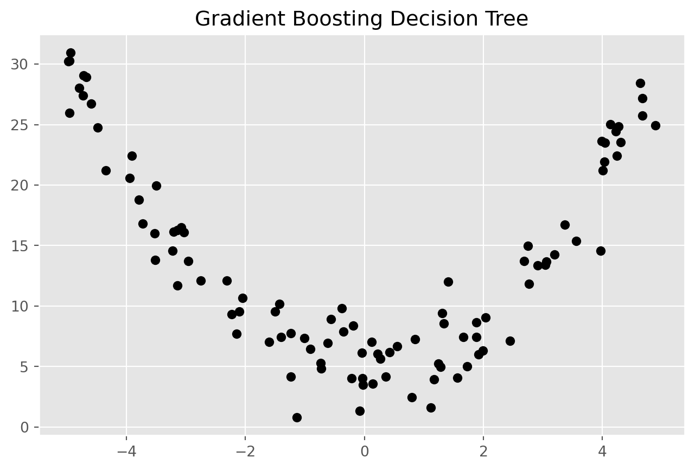
Treinando um GBDT (árvores em sequência):
X = X.reshape(-1, 1)
tree_1 = DecisionTreeRegressor(max_depth=3).fit(X, y)
resid_1 = y - tree_1.predict(X=X) # Residuo da primeira Arvore
tree_2 = DecisionTreeRegressor(max_depth=3).fit(X, resid_1)
resid_2 = resid_1 - tree_2.predict(X=X) # Residuo da segunda Arvore
tree_3 = DecisionTreeRegressor(max_depth=3).fit(X, resid_2)Dessa forma, cada árvore se especializou em aprender a “consertar” os erros das arvores que vieram antes. Voltando a ideia de regressão não paramétrica, o modelo inicial dado é:
\[y_{i} = r_{1}(x_{i}) + \epsilon_{1i} = tree_{1}(x_{i}) + \epsilon_{1i}\]
A árvore 2 é treinanda com os resíduos \(\epsilon_{1}\) da árvore 1:
\[(y_{i}-tree_{1}(x_{i})) = \epsilon_{1i} = r_{2}(x_{i}) + \epsilon_{2i} = tree_{2}(x_{i}) + \epsilon_{2i}\]
Por fim, a árvore 3 é treinada com os resíduos da árvore 2, isso é:
\[(y_{i}-tree_{1}(x_{i})) - tree_{2}(x_{i}) = \epsilon_{1i} = r_{3}(x_{i}) + \epsilon_{3i} = tree_{3}(x_{i}) + \epsilon_{3i}\]
A idéia intuitiva é que se adicione novas árvores conforme isso reduza os erros em teste, até que não seja possível mais entender os padrões em \(\epsilon_{q}\).
Pode-se reescrever a equação acima como:
\[y_{i}-tree_{1}(x_{i}) - tree_{2}(x_{i}) - tree_{3}(x_{i}) = \epsilon_{3i}\]
\[y_{i} = tree_{1}(x_{i}) + tree_{2}(x_{i}) + tree_{3}(x_{i}) + \epsilon_{3i}\]
Ou seja, a previsão da i-esima observação \(y_{i}\) é a soma das previsões das árvores. Do ponto de vista da regressão não paramétrica, o modelo é dado por:
\[y_{i} = r(x_{i}) + \epsilon_{i} = \sum^{q}_{i=1}tree_{i}(x_i) + \epsilon_{i}\]
Onde cada árvore \(tree_i\) foi treinada sequencialmente.
Em python, o modelo treinado acima seria dado como:
x_space = np.arange(-5, 6).reshape(-1, 1)
y_pred = sum(tree.predict(x_space) for tree in (tree_1, tree_2, tree_3))Visualizando o modelo:
f, ax = plt.subplots(figsize=(8, 5))
ax.scatter(x=X,
y=y,
color='k')
ax.plot(x_space, y_pred, label="GBDT")
plt.plot(x_space, x_space ** 2 + 5, label="Modelo Gerador")
plt.legend()
plt.title("Gradient Boosting Decision Tree")
plt.show()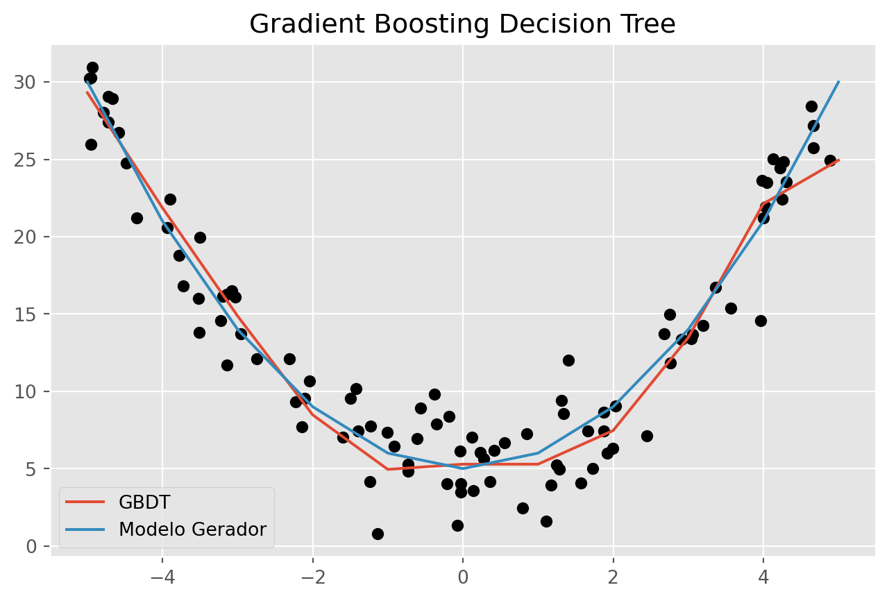
Novamente, é válido reforçar: ninguém está preocupado se o erro padrão dos nós destas árvores tem distribuição normal, são não-viesados, assintóticos etc. Por isso trata-se de uma regressão não paramétrica.
O game change a partir de agora será como é adicionado estas árvores e como elas são modeladas. E é aí que vai residir a diferença entre o XGBoost e o LightGBM. No geral, a diferença vai ser de performance computacional e de estratégia da construção destas árvores.
A partir de agora se usará o XGBoost sem tunagem de hiper-parâmetros, dado que a idéia é apenas entender sua aplicação em séries temporais.
Modelando: XGBoost vs Regressão Linear para Previsão de Demanda
Baixando os dados:
Os dados da venda de cerveja no USA podem ser acessados diretamente deste link do github aqui.
df = pd.read_csv(path, parse_dates=['date'], index_col=['date'])
print(df.tail()) beer
date
2018-08-01 4898
2018-09-01 4598
2018-10-01 4737
2018-11-01 5130
2018-12-01 6370f, ax = plt.subplots(figsize=(8, 5))
plt.plot(df.beer, 'k')
plt.title("Beer Sales")
plt.show()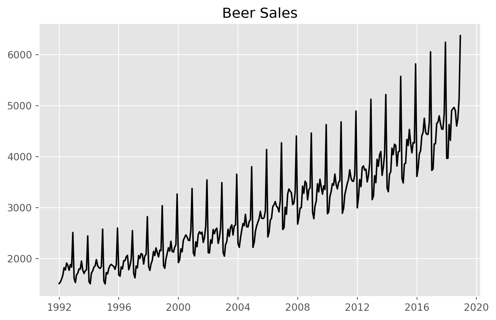
Metodologia:
A idéia da análise é fazer um comparativo de desempenho conforme se aumenta a sofisticação do XGBoost. Serão feitas validações cruzadas onde o objetivo do modelo será prever a demanda total do ano posterior. Serão usados 72 meses para prever a demanda dos próximos 12, como pode ser visto abaixo:
cv = SlidingWindowForecastCV(step=12,
h=12,
window_size=72)
cv_generator = cv.split(df)
n = len(list(cv.split(df)))
f, axs = plt.subplots(nrows=n,
ncols=1,
sharex=True,
figsize=(8, 12))
f.suptitle(f"Cross-Validation Subsets ({n})")
for i in range(n):
index = next(cv_generator)
axs[i].plot(df.iloc[index[0]], 'k')
axs[i].plot(df.iloc[index[1]], 'r')
axs[i].get_yaxis().set_visible(False)
plt.tight_layout()
plt.show()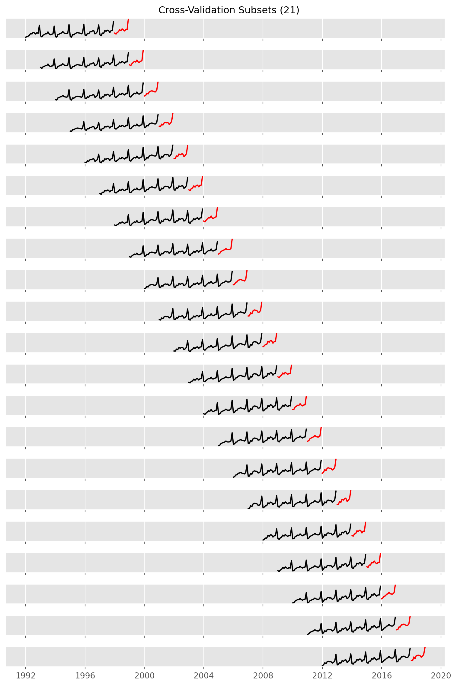
Além disso, seguindo a vibe não paramétrica do texto, será feito uso de um teste de hipótese binomial para validar o vencedor. A ideia do teste é bem simples:
Supõe-se que os modelos têm a mesma performance. Se isso é verdade, então a probabilidade de um modelo ter uma acurácia maior que o outro é 50%, o mero acaso.
Dessa forma, espera-se que o desempenho de cada modelo tenha uma distribuição binomial de média \(0.5n\) nos n testes. Se for observado um valor que faça sentido a luz dessa hipótese, então os modelos tem performance similar.
Do contrário, rejeita-se a hipótese.
Aqui, uma função em python que executa o teste e retorna um print() para melhor entendimento do usuário.
def test(a, b, alpha = .05):
n = len(a)
a_venceu = (a>b).sum()
b_venceu = (b>a).sum()
print(f"Testes: {n}")
print(f"A venceu: {a_venceu}")
print(f"B venceu: {b_venceu}")
print()
if a_venceu >= b_venceu:
vencedor = "A"
k = a_venceu
else:
vencedor = "B"
k = b_venceu
resultado = st.binomtest(k=k, n=n,
p=.5, alternative='greater')
if resultado.pvalue > alpha:
print(f"Não há evidências para dizer que o {vencedor} é o melhor modelo")
else:
print(f"Há evidências para dizer que o {vencedor} é o melhor modelo")
print(f"p valor: ", round(resultado.pvalue, 3))Esse teste supõe que as amostras são independentes, o que não é bem verdade, uma vez que o mesmo ano será usado até 6x para treino. De toda forma, será um bom norte.
Modelando a Tendência:
É bem nítido que há uma tendência na série. Isso é, intrisicamente no Processo Estocástico (PE) gerador da série há alguma função do tempo que, sistematicamente, soma algum incremento na série, multiplique ela por um fator > 1 ou faça ambos ao mesmo tempo.
C:\Users\vinicius.aquino@grupoboticario.com.br\AppData\Local\Temp\ipykernel_23244\3063308096.py:2: FutureWarning: 'Y' is deprecated and will be removed in a future version, please use 'YE' instead.
plt.plot(df.beer.resample('1Y').sum(), 'k')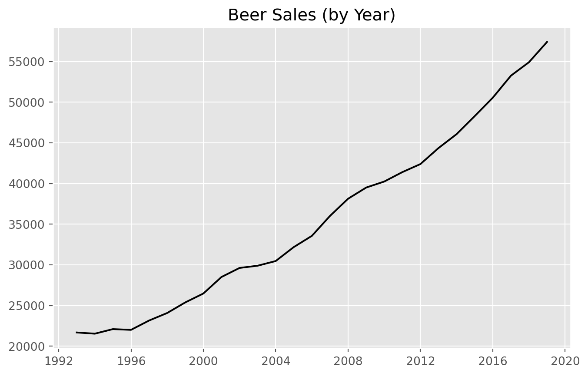
Por uma questão de simplicidade de modelo, será usado uma relação linear para descrever essa suposta função. Nesse caso, a abordagem da regressão linear não será como a descrita no texto Regressão Linear Aplicada à Séries Temporais (mais “mecanística”), mas será tal qual é usada nos modelos de machine learning no contexto de séries temporais. O modelo da demanda no caso da regressão linear será:
\[y_{t} = \beta_{0} + \beta_{trend}t\]
A interpretação dos parâmetros \(\beta_{0}\) e \(\beta_{1}\) é bem intuitiva. Como o input é o ano, o \(\beta_{1}\) é a variação da demanda ano a ano e o \(\beta_{0}\) seria a “demanda inicial” no ano 0 (não faz muito sentido mesmo, mas tratando de interceptos isso é bem comum). No caso, não tem como saber exatamente como será o modelo do XGBoost e a vantagem dessa classe de modelos é exatamente essa. Por se tratar de uma regressão não paramétrica, ele encontrará, nos dados, a melhor forma de descrever essa tendência em função do tempo.
Criando uma função para automatizar o processo de data featuring para a tendência:
def data_featuring_trend(df):
X = df.copy()
X.loc[:, 'year'] = [i.year for i in X.index]
return X.drop(labels=['beer'],
axis=1)Criando o modelo para os 21 backtest:
cv_generator = cv.split(df)
n = len(list(cv.split(df)))
acc_reg_1 = []
acc_xgb_1 = []
for i in range(n):
index = next(cv_generator)
# Separando teste do treino
y_train = df.iloc[index[0]].copy()
X_train = data_featuring_trend(y_train)
y_test = df.iloc[index[1]].copy()
X_test = data_featuring_trend(y_test)
# Treinando modelos
reg = LinearRegression(fit_intercept=True)
reg.fit(X_train.values, y_train)
y_reg_pred = reg.predict(X=X_test.values)
xgb = XGBRegressor()
xgb.fit(X_train.values, y_train)
y_xgb_pred = xgb.predict(X=X_test.values)
# Salvando acurácia dos modelos
acc_reg_1.append(1-abs(y_test.beer.values.sum()- y_reg_pred.sum())/y_test.beer.values.sum())
acc_xgb_1.append(1-abs(y_test.beer.values.sum()- y_xgb_pred.sum())/y_test.beer.values.sum())
acc_reg_1,acc_xgb_1 = np.array(acc_reg_1), np.array(acc_xgb_1)
print(acc_reg_1)
print()
print(acc_xgb_1)
print()
print(f"XGBoost vence: {(acc_xgb_1>acc_reg_1).sum()} ({round(100*(acc_xgb_1>acc_reg_1).sum()/n, 2)} %)")
print()
print(f"regressão vence: {(acc_xgb_1<acc_reg_1).sum()} ({round(100*(acc_xgb_1<acc_reg_1).sum()/n, 2)} %)")[0.94956268 0.96975878 0.95273909 0.9895277 0.96724426 0.95933134
0.996359 0.98306074 0.94584999 0.95548503 0.9947364 0.96824616
0.97035176 0.97464616 0.98857959 0.97895506 0.97236466 0.97753643
0.97691234 0.9985189 0.99684608]
[0.94874313 0.95867934 0.92875407 0.96239128 0.99086754 0.98112817
0.94656535 0.95894754 0.93200233 0.94460743 0.96516789 0.98158768
0.97207787 0.97662276 0.95552783 0.96286553 0.95423104 0.95521251
0.94920657 0.96978884 0.95652298]
XGBoost vence: 5 (23.81 %)
regressão vence: 16 (76.19 %)Como pode ser visto, o XGBoost perfoma acima da regressão linear em somente 5 de 21 casos (23%). Será que a regressão realmente performa acima ou esse valor pode ter vindo do acaso? Bom, testa-se a hipótese de que a regressão linear tem probabilidade 50% de vencer o XGBoost.
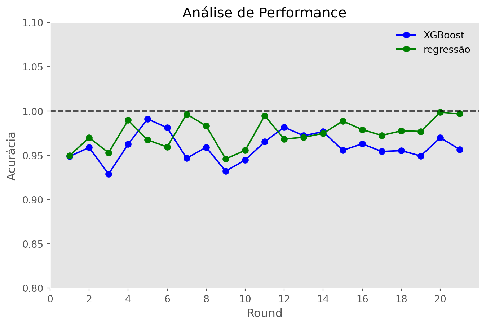
test(a = acc_reg_1,
b = acc_xgb_1)Testes: 21
A venceu: 16
B venceu: 5
Há evidências para dizer que o A é o melhor modelo
p valor: 0.013Hipótese rejeitada. Isso significa que, sim, pode-se afirmar que a regressão produz uma acurácia maior que o XGBoost. A probabilidade dela não ser maior e ser observada esse placar ou um mais raro é somente 1.3%.
O ponto agora é discutir a natureza desses resultados. Afinal, o que a regressão linear entendeu que o XgBoost não entendeu? O que pode explicar esse melhor desempenho do modelo mais simples?
Para responder essa questão, o próximo passo é explorar pelo menos o último modelo treinado e entender o que aconteceu. Fazendo um gráfico de dispersão das observações da série em termos das variáveis de entrada (somente o ano):
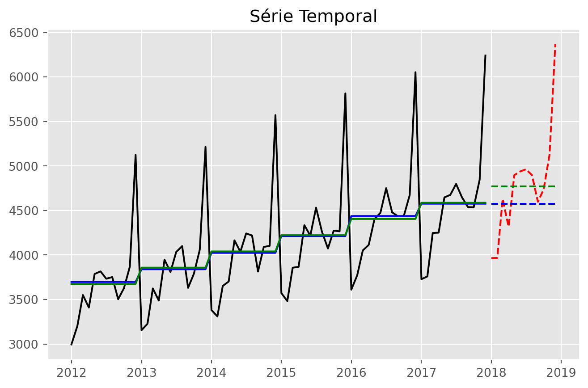
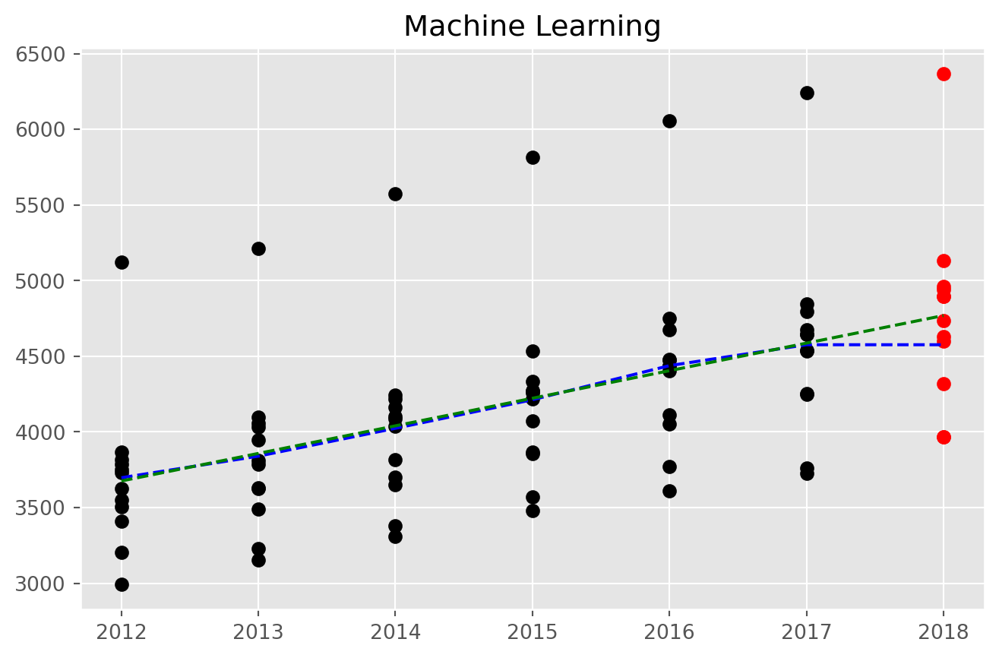
O primeiro ponto é quanto a previsão “linear”. Sim, naturalmente a previsão vai ser uma reta horizontal. Dado que em todos os 12 pontos do ano há o mesmo input (o ano corrente).
O segundo ponto é a fraquíssima capacidade do XGboost em extrapolar a previsão para fora do espaço de treino das covariáveis. Bom, isso não é exatamente um problema exclusivo do XGBoost. Explica-se.
Na verdade, regressões, no geral, sem qualquer exceção, têm esse problema de extrapolação do espaço das covariáveis. A regressão linear também sofre com isso. Inclusive, quando se aprende regressão linear, aprende-se que deve-se evitar essa extrapolação. Não a toa, ela não venceu em todas, mas na maioria. E, nesse caso, performou melhor por ser mais simples. É um modelo que apenas estima a varição ano a ano média.
Analisando as nuances do teste, o que foi feito, em termos práticos, foi ensinar um modelo o padrão da venda de cerveja entre os inputs de 2012 a 2017. No entanto, o que foi exigido foi prever como vai ser essa venda em 2018. Parece até sacanagem com o coitado. De fato, ele entendeu a demanda entre 2012 e 2017, mas a falta de observações do futuro não permitiu ele entender o seu comportamento.
Entendido o porquê o XGBoost performou tão mal, fica, portanto, entendido que ele deve ser descartado, posto que em todos os problemas de séries temporais haverá essa necessidade de extrapolação? A resposta é não. Tem como contornar esse problema, inclusive, aplicando metodologias inspiradas nos modelos clássicos de séries temporais, como remoção de tendência diferenciando a série.
Por hora, fica no radar essa eventual limitação no que tange ao intervalo de predição.
Modelando a Sazonalidade:
A série tem um claro fator sazonal que pode ser observado na vizualização abaixo:
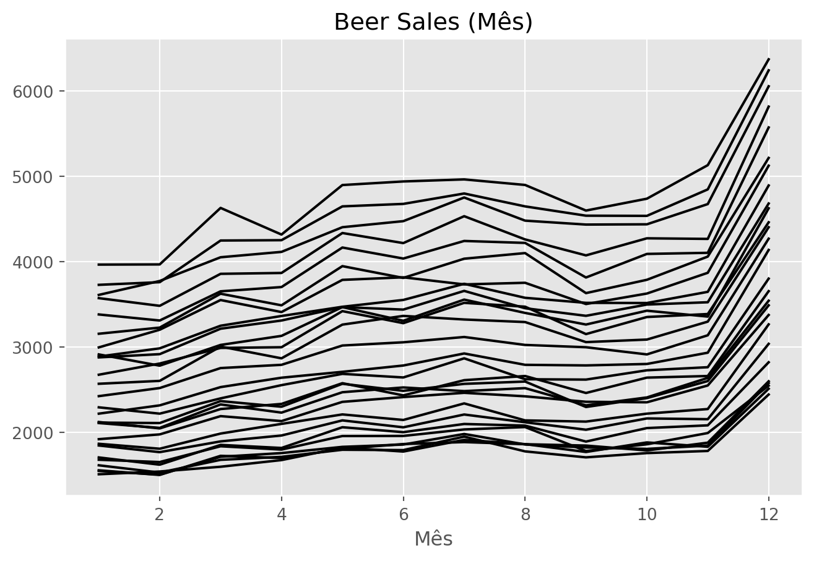
E, agora, que já há uma previsão da tendência, o próximo passo é saber o quanto a demanda vai variar em cada mês em relação ao “nível” médio anual. Dessa forma, o modelo de regressão linear ganha essa cara:
\[y_{t} = \beta_{0} + \beta_{trend}t + \beta_{jan}x_{jan} + \beta_{fev}x_{fev}+ ... + \beta_{nov}x_{nov}\]
Onde as variáveis \(x_{k}'s\) são variáveis binárias que correspondem ao mês. Isso é, \(x_{jan}\) vale 1 se o mês for janeiro, 0 caso contrário. E, portanto, \(\beta_{jan}\) é o “prêmio” que se soma a demanda por ser janeiro, podendo ser positivo ou não. O input da regressão linear DEVE ser feito via variáveis dummies, dado que o mês é uma variável qualitativa nominal e o modelo é linear. Não há dezembro nas variáveis dummies por uma questão de multicolinearidade (o intercepto seria uma relação lienar perfeita de todas as variáveis de sazonalidade).
Novamente, não é possível saber como o XGBoost vai ser interpretado, dado que trata-se de uma regressão não paramétrica. O input da sazonalidade PODE ser dado como se o mês fosse uma variável numérica, dado que o modelo é baseado em árvores de decisão e conseguiria “captar” o movimento da sazonalidade. No entanto, será usado, também, variáveis dummies.
Criando funções que adicionam variáveis de sazonalidade:
def data_featuring_sazo(df: pd.DataFrame) -> pd.DataFrame:
X = df.copy()
X.loc[:, 'year'] = [i.year for i in X.index]
X.loc[:, 'month'] = [i.month for i in X.index]
X_sazo = pd.get_dummies(X['month'])
X = pd.concat([X, X_sazo], axis=1)
return X.drop(labels=['month', 'beer', 12],
axis=1).astype('int')Vizualizando quais seriam os inputs:
print(data_featuring_sazo(df.iloc[-12:]).reset_index(drop=True)) year 1 2 3 4 5 6 7 8 9 10 11
0 2018 1 0 0 0 0 0 0 0 0 0 0
1 2018 0 1 0 0 0 0 0 0 0 0 0
2 2018 0 0 1 0 0 0 0 0 0 0 0
3 2018 0 0 0 1 0 0 0 0 0 0 0
4 2018 0 0 0 0 1 0 0 0 0 0 0
5 2018 0 0 0 0 0 1 0 0 0 0 0
6 2018 0 0 0 0 0 0 1 0 0 0 0
7 2018 0 0 0 0 0 0 0 1 0 0 0
8 2018 0 0 0 0 0 0 0 0 1 0 0
9 2018 0 0 0 0 0 0 0 0 0 1 0
10 2018 0 0 0 0 0 0 0 0 0 0 1
11 2018 0 0 0 0 0 0 0 0 0 0 0Criando o modelo para os 21 backtest:
cv_generator = cv.split(df)
n = len(list(cv.split(df)))
acc_reg_2 = []
acc_xgb_2 = []
for i in range(n):
index = next(cv_generator)
# Separando teste do treino
y_train = df.iloc[index[0]].copy()
X_train = data_featuring_sazo(y_train)
y_test = df.iloc[index[1]].copy()
X_test = data_featuring_sazo(y_test)
# Treinando modelos
reg = LinearRegression(fit_intercept=True)
reg.fit(X_train.values, y_train)
y_reg_pred = reg.predict(X=X_test.values)
xgb = XGBRegressor()
xgb.fit(X_train.values, y_train)
y_xgb_pred = xgb.predict(X=X_test.values)
# Salvando acurácia dos modelos
acc_reg_2.append(1-abs(y_test.beer.values.sum()- y_reg_pred.sum())/y_test.beer.values.sum())
acc_xgb_2.append(1-abs(y_test.beer.values.sum()- y_xgb_pred.sum())/y_test.beer.values.sum())
acc_reg_2,acc_xgb_2 = np.array(acc_reg_2), np.array(acc_xgb_2)
print(acc_reg_2)
print()
print(acc_xgb_2)
print()
print(f"XGBoost vence: {(acc_xgb_2>acc_reg_2).sum()} ({round(100*(acc_xgb_2>acc_reg_2).sum()/n, 2)} %)")
print()
print(f"regressão vence: {(acc_xgb_2<acc_reg_2).sum()} ({round(100*(acc_xgb_2<acc_reg_2).sum()/n, 2)} %)")[0.94956268 0.96975878 0.95273909 0.9895277 0.96724426 0.95933134
0.996359 0.98306074 0.94584999 0.95548503 0.9947364 0.96824616
0.97035176 0.97464616 0.98857959 0.97895506 0.97236466 0.97753643
0.97691234 0.9985189 0.99684608]
[0.948137 0.95846651 0.92909444 0.96159648 0.99043659 0.98197803
0.94585835 0.95772977 0.93218758 0.94337105 0.96446503 0.98153546
0.97121937 0.9757154 0.95458422 0.96269496 0.95324182 0.95416837
0.9484232 0.96875804 0.9556873 ]
XGBoost vence: 5 (23.81 %)
regressão vence: 16 (76.19 %)E o XGBoost segue performando ABAIXO da regressão linear. Dando uma explorada na forma com que ele lidou com os dados:

Dessa vez, a previsão tá com mais carinha de série temporal. No caso, em termos práticos, cada efeito sazonal estimado somou um fator (positivo ou negativo) naquele nível inicialmente estimado para a regressão linear.
O XGBoost nadou de braçada em treino, sequer é possível ver a linha dos dados em treino. No entanto, em teste ele subestimou a demanda. E isso se deve, novamente ao problema da extrapolação no espaço da covariáveis ano.
Analizando previsão sob as covariáveis:
Nas covariáveis de tendência:
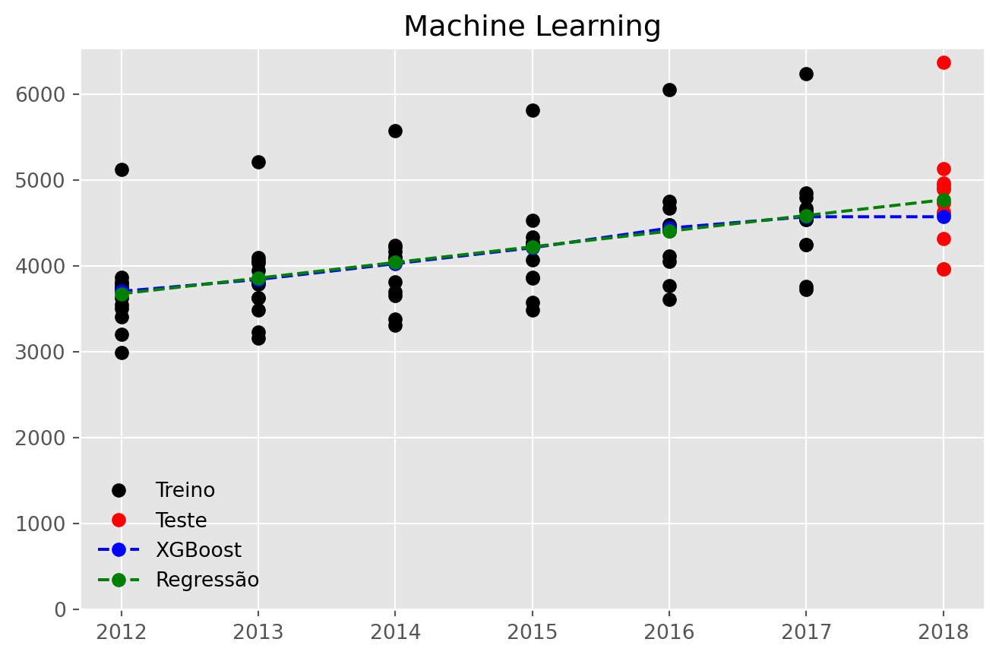
Nas covariáveis de sazonalidade:
f, ax = plt.subplots(figsize=(8, 5))
for year in y_train.index.year.unique():
df_temp = y_train.loc[y_train.index.year == year]
ax.plot(df_temp.index.month, df_temp.beer, color='k')
ax.plot(y_test.index.month, y_xgb_pred, 'b--', label='XGBoost')
ax.plot(y_test.index.month, y_reg_pred, 'g--', label='Regressão')
ax.plot(y_test.index.month, y_test, 'r--', label='Teste')
plt.ylim(0)
plt.legend()
plt.xlabel("Mês")
plt.title("Beer Sales (Mês)")
plt.show()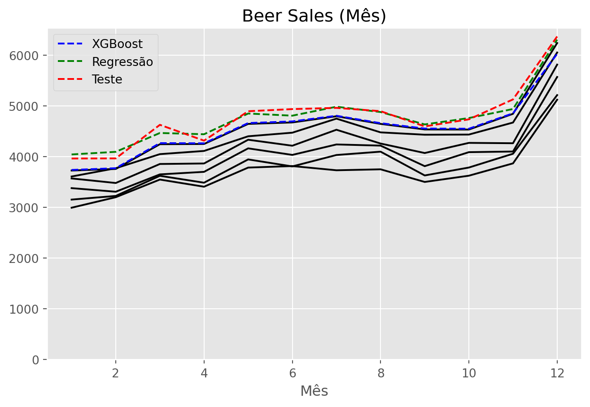
É percepitível que o XGBoost pegou bem o padrão sazonal, no entanto, erra em acertar o nível (tendência). Novamente o problema citado na seção anterior.
Removendo Tendência:
Será feito uma transformação na variável \(y_{t}\) a fim de que a previsão dela seja “facilitada” para os modelos.
f, ax = plt.subplots(figsize=(8, 5))
ax.plot(df.diff().dropna()['beer'], 'k')
plt.title("Variação Nominal")
plt.show()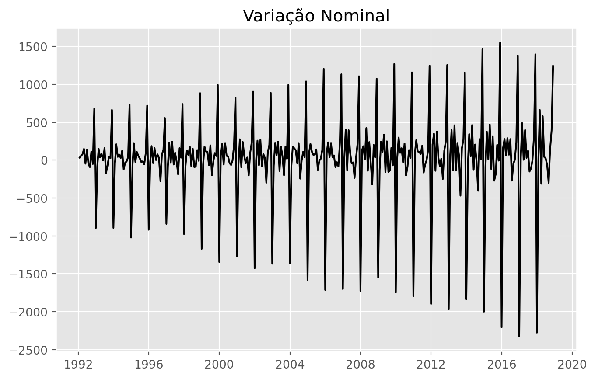
A série continua, ainda, não estacionária, posto que sua variância aumenta em função do tempo. A gente pode remover essa heterocedasticidade usando o logaritmo da série (e o derivando, dado que ele também não é estacionário):
f, ax = plt.subplots(figsize=(8, 5))
ax.plot((np.log(df['beer'])).diff().dropna(), 'k')
plt.title("Variação Nominal do Logaritmo")
plt.show()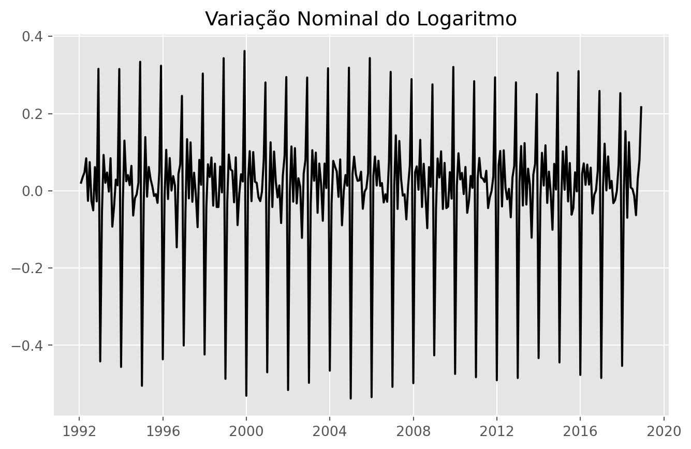
Neste caso, a série passa a se comportar de forma estacionária. Rodando os modelos novamente:
cv_generator = cv.split(df)
n = len(list(cv.split(df)))
acc_reg_3 = []
acc_xgb_3 = []
for i in range(n):
index = next(cv_generator)
# Separando teste do treino
y_train = df.iloc[index[0]].copy()
y_test = df.iloc[index[1]].copy()
# Fazendo a transformação
df_temp = np.log(pd.concat([y_train, y_test])).diff().dropna()
y_train, y_test = df_temp.loc[y_train.index[1:]], df_temp.loc[y_test.index]
X_train = data_featuring_sazo(y_train)
X_test = data_featuring_sazo(y_test)
# Treinando modelos
reg = LinearRegression(fit_intercept=True)
reg.fit(X_train.values, y_train)
y_reg_pred = reg.predict(X=X_test.values)
xgb = XGBRegressor()
xgb.fit(X_train.values, y_train)
y_xgb_pred = xgb.predict(X=X_test.values)
# Retornando as variáveis para escala padrão (integrando):
y_test = np.array([0] + list(y_train.beer.values) + list(y_test.beer.values))
y_test = np.exp(np.log(df.iloc[index[0][0], 0]) + y_test.cumsum())[-12:]
y_reg_pred = np.array([0] + list(reg.predict(X=X_train.values)[:,0]) + list(y_reg_pred[:,0]))
y_reg_pred = np.exp(np.log(df.iloc[index[0][0], 0]) + y_reg_pred.cumsum())
y_xgb_pred = np.array([0] + list(xgb.predict(X=X_train.values)) + list(y_xgb_pred))
y_xgb_pred = np.exp(np.log(df.iloc[index[0][0], 0]) + y_xgb_pred.cumsum())
# Salvando acurácia dos modelos
acc_reg_3.append(1-abs(y_test.sum() - y_reg_pred[-12:].sum())/y_test.sum())
acc_xgb_3.append(1-abs(y_test.sum()- y_xgb_pred[-12:].sum())/y_test.sum())
acc_reg_3,acc_xgb_3 = np.array(acc_reg_3), np.array(acc_xgb_3)
print(acc_reg_3)
print()
print(acc_xgb_3)
print()
print(f"XGBoost vence: {(acc_xgb_3>acc_reg_3).sum()} ({round(100*(acc_xgb_3>acc_reg_3).sum()/n, 2)} %)")
print()
print(f"regressão vence: {(acc_xgb_3<acc_reg_3).sum()} ({round(100*(acc_xgb_3<acc_reg_3).sum()/n, 2)} %)")[0.99532842 0.93930839 0.95202871 0.97169372 0.93077445 0.98235854
0.97826689 0.97537997 0.98561417 0.99258848 0.98632184 0.96603365
0.98250614 0.95616816 0.98036951 0.99492786 0.97460849 0.98595941
0.99981699 0.99789177 0.98427603]
[0.92437821 0.93035122 0.95883194 0.9853717 0.93193493 0.99198943
0.9724272 0.96913393 0.94678025 0.99926013 0.98498942 0.98660142
0.95577222 0.98513558 0.97178947 0.96626747 0.98690382 0.95001207
0.97660542 0.9728616 0.9922924 ]
XGBoost vence: 9 (42.86 %)
regressão vence: 12 (57.14 %)E o jogo virou! O XGBoost performa melhor 12 vezes, contra 9 da regressão linear. Será que vencer 57% de 21 duelos é o bastante para dizer que ele é melhor? Bom, é uma hipótese que pode ser testada.
#echo: True
f, ax = plt.subplots(figsize=(8, 5))
ax.plot(acc_xgb_3, 'b-o', label='XGBoost')
ax.plot(acc_reg_3, 'g-o', label='Regressão')
plt.ylim(.8, 1.1)
plt.axhline(y=1, color='k', alpha=.5, ls='--')
plt.legend(frameon=False)
plt.xticks(np.arange(0, 22, 2))
plt.xlabel("Round")
plt.ylabel("Acurácia")
plt.title("Análise de Performance")
plt.grid(False)
plt.show()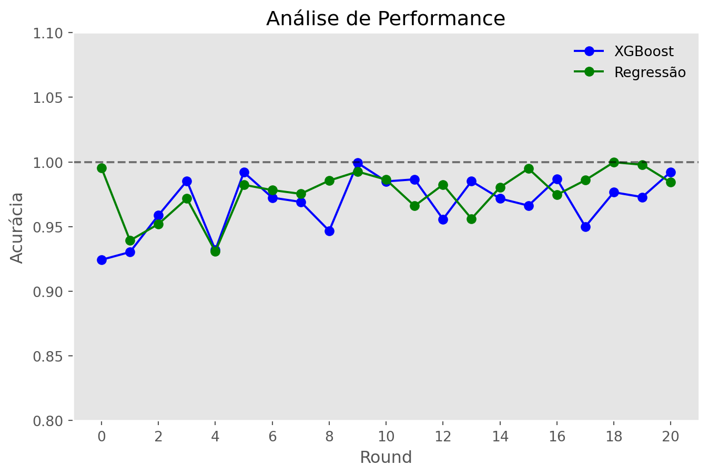
test(a=acc_xgb_3,
b=acc_reg_3)Testes: 21
A venceu: 9
B venceu: 12
Não há evidências para dizer que o B é o melhor modelo
p valor: 0.332Observa-se um p-valor de 33%. Isso é, apesar de ter performado acima da Regressão Linear, não há evidências para dizermos que o XGBoost é melhor do que a Regressão e que essse resultado não é por acaso.
O que, em termos práticos, quer dizer que para esse dataset, uma regressão linear vai ter performance similar a regressões não paramétricas. O XGBoost pode, ainda, ganhar algumas covariáveis, defasagens e etc. mas aí, para ser justos, teríamos que colocar ele para competir com um SARIMA. De todo jeito, é um bom modelo a ter na caixa de ferramentas de cientista de dados.
A título de comparação, abaixo é possível ver a performance dos 3 XGBoost treinados ao longo do texto:
#echo: True
f, ax = plt.subplots(figsize=(8, 5))
ax.plot(acc_xgb_1, 'b-o', alpha=.5, label='XGBoost 1')
ax.plot(acc_xgb_2, 'r-o', alpha=.5, label='XGBoost 2')
ax.plot(acc_xgb_3, 'g-o', alpha=.5, label='XGBoost 3')
plt.ylim(.8, 1.1)
plt.axhline(y=1, color='k', alpha=.5, ls='--')
plt.legend(frameon=False)
plt.xticks(np.arange(0, 22, 2))
plt.xlabel("Round")
plt.ylabel("Acurácia")
plt.title("Análise de Performance")
plt.grid(False)
plt.show()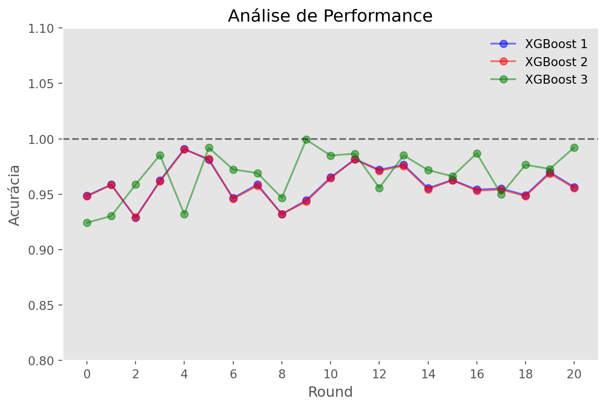
Ficando nítido o ganho de performance com o tratamento da tendência. Vizualizando o último modelo vindo da escala log pra ver como está “visualmente” o modelo:
y_train = df.iloc[index[0]].copy()
y_test = df.iloc[index[1]].copy()
f, ax = plt.subplots(figsize=(8, 5))
plt.plot(y_train, 'k', label='Treino')
plt.plot(y_test, 'r--', label='Teste')
plt.plot(y_test.index, y_xgb_pred[-12:], 'b--', label='XGBoost')
plt.plot(y_test.index, y_reg_pred[-12:], 'g--', label='Regressão')
plt.legend(frameon=False)
plt.title("Série Temporal")
plt.show()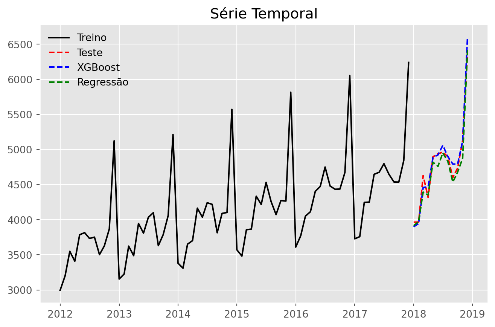
Agora, sim, com “carinha” de modelo de série temporal.
Comentários Finais:
Recapitulando o que foi visto:
-Definiu-se o que são regressões não paramétricas
-Foi apresentada uma classe de regressões não paramétricas, o Gradient Boost Tree Decision
-Foi explorado os problemas dessa aborgadem na previsão de demanda usando o XGBoost
-Foi apresentada possíveis soluções para o problema de tendência
Lembrando, foi usado o XGBoost, mas poderia ser usado o LightLGB, o KNN, Splines etc. O ponto central está no entendimento da aplicação desses modelos e suas eventuais limitações.
Outro ponto a se destacar foi a importância da remoção da tendência. Apesar de ser um modelo “moderninho” de machine learning, o que ajudou ele a performar melhor foi um approach mais clássico de séries temporais. No final, não importa o modelo, aplicar uma metodologia baseada em Box & Jenkis nunca faz mal. Transformações nos dados também ajudam muito.
No mais, trata-se de um modelo promissor para dados estacionários com forte padrão de sazonal. É muito usado quando se trata de uma granulalidade alta, seja no tempo (hora, dia etc), seja na previsão (sku, pdv etc), dado que ele entende fácil padrões estruturais.
Além disso, usa-se muito variáveis com lag, afim de dar uma cara mais de “SARMA” pra ele. Novamente a ideia de usar do que há mais bem conceituada na estatística clássica, mas com modelos não lineares mais robustos.
Principais Fontes:
-Para regressões não paramétricas, há as notas de aula do professor Lucambio Perez da UFPR: Regressão Não Paramétrica.
-Para uma boa introdução ao universo de séries temporais e previsão, o livro Forecasting: Principles & Practice. O livro é todo construído em R, o que pode ser um problema para os pythonistas. Os autores têm excelentes publicações na área de séries temporais, que são devidamente citadas ao longo do livro, então é uma baita livro de cabeceira.
-Para sofrer um pouquinho com séries temporais e entender a fundo a “lógica” da modelagem de um processo estocástico, o livro Econometria de Séries Temporais. Não recomendo como primeira leitura, mas certamente um baita livro para elevar o nível de entendimento no assunto.
-Para uma introdução no universo do Machine Learning, o livro Mãos à Obra: Aprendizado de Máquina com Scikit-Learn & TensorFlow. É um livro básico, mas que é legal ter como consulta, como foi o caso na construção do texto.
-Para mais usos de Aprendizado de Máquina Supervisionado em séries temporais, o livro Advanced Forecasting with Python. Não é tão advanced assim e o autor acaba pecando fortemente na exploração de alguns modelos, mas é o preço que se paga por querer ensinar +10 modelos distintos em menos de 300 pgs.